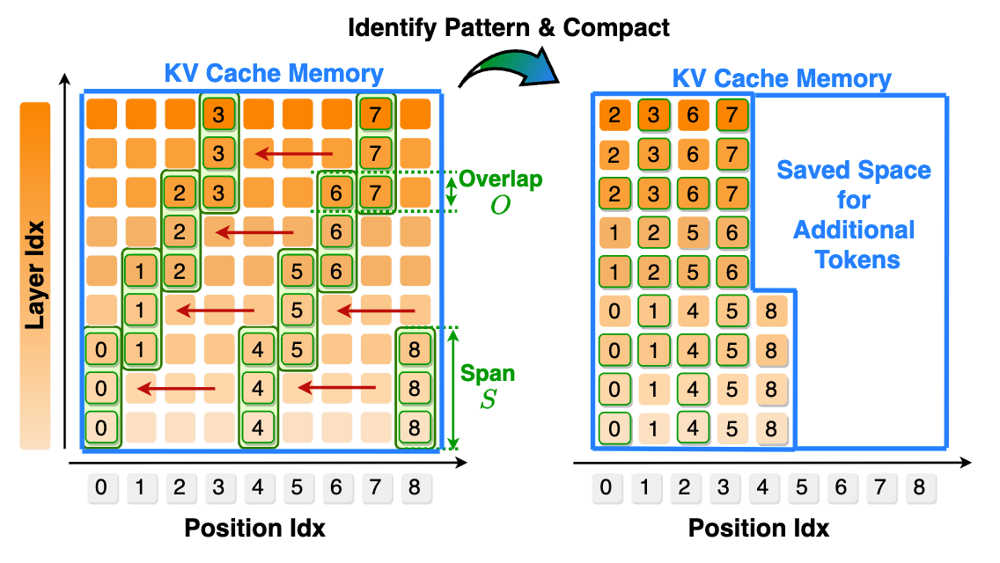
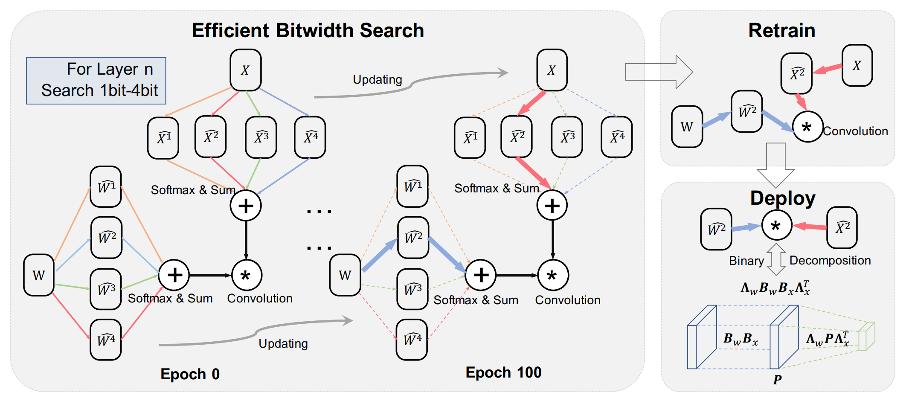
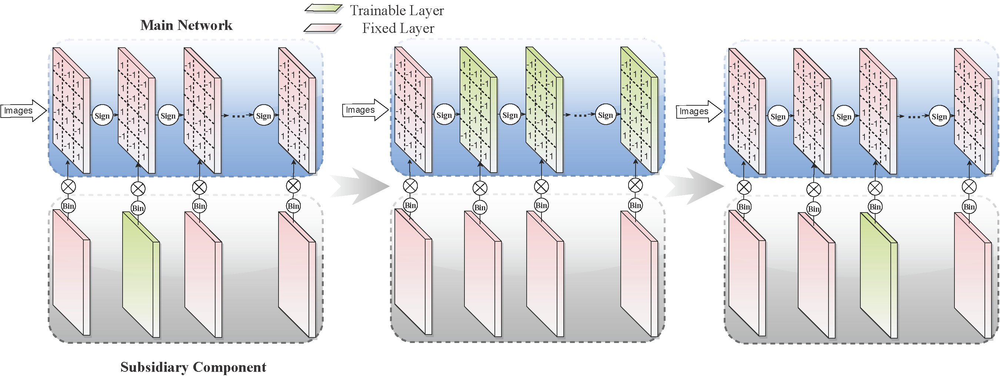
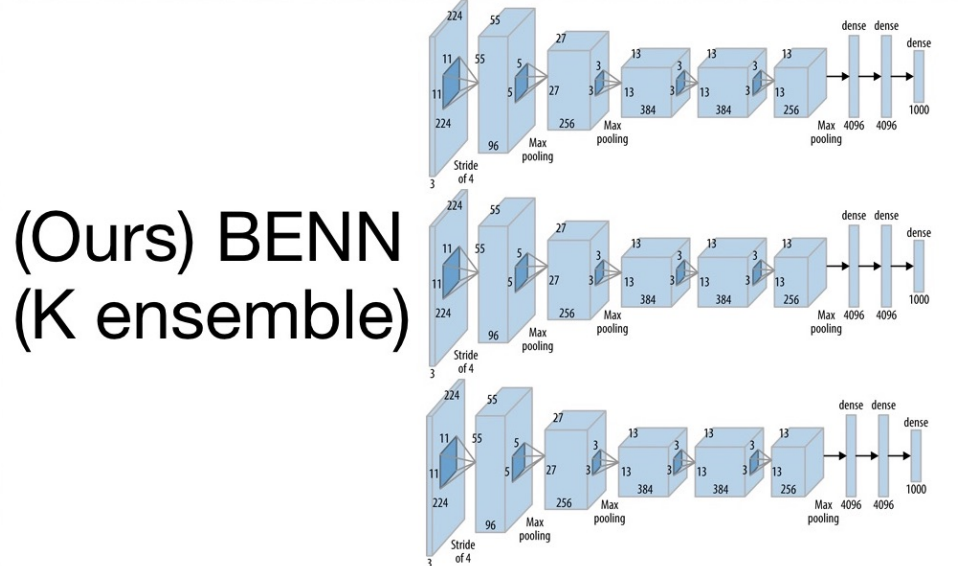

|
Cambridge, MA, May 2020 |
I am a research scientist at NVIDIA Research. I received Ph.D. in Computer Science from Harvard University in 2023, advised by H.T. Kung. I have general research interests in deep learning, with a focus on designing accurate, efficient and trustworthy systems for autonomous machines, LLM and GenAI. Prior to Harvard, I was a research assistant at Nanyang Technological University and UC San Diego. I am a recipient of the Harvard James Mills Peirce Fellowship.
Email: xind [at] nvidia.com, xindong [at] alumni.harvard.edu |
News
- Jun 2025 » We have released Nemotron-Research-Reasoning-Qwen-1.5B (Top10 trend), trained using ‚ÄúProlonged RL,‚Äù where we significantly scaled up RL training steps (+2k) and problems (+130k). The RL-trained model makes substantial progress on problems that the base model cannot solve. Our 1.5B model has achieved impressive results, on par with DeepSeek-R1-Distill-Qwen-7B.
- Apr 2025 » We have released CLIMB, a robust LLM pre- and post-training dataset building method.
We have now completed the puzzle of data preparation, model architecture, training recipes, and alignment to achieve state-of-the-art SLM. A small but strong reasoner is on the way. - Jan 2025 » Gave a talk at Scale ML + MLSys @ MIT on our Hymba work. Thanks for the invite.
- Dec 2024 » üèÜ Join our Data Filtering Challenge for Edge LLMs and help shape the future of language models. Solve real-world problems, showcase your skills, and win amazing prizes!
- Nov 2024 » We released the first hybrid-head model, Hymba-1.5B (accepted by ICLR 2025 as spotlight), which outperforms LLaMA 3.2-3B, despite being trained on 7× fewer tokens and achieving 12× cache reduction. Try them from Huggingface for your on-device LLM applications.🔥
- Oct 2022 » Our Additive Power-of-Two Quantization (ICLR'20) is now supported by offical PyTorch APIs. It is a non-uniform quantization that fits well to weights distribution and offers great hardware efficiency. Try it out!
- Oct 2022 » Our Direct Model Inversion is accepted by BMVC 2022 and featured by MIT Technology Review, SingularityHub. Thank collaborators from NVIDIA and Harvard.
Experiences
NVIDIA
Sony
Meta Reality Lab
NVIDIA
Tencent America
Publications


A Deeper Look at Depth Pruning of LLMs
ICML 2024 Workshop on Theoretical Foundations of Foundation Models (ICML Workshop 2024)
Is Heterogeneity Notorious? Taming Heterogeneity to Handle Test-Time Shift in Federated Learning
Conference on Neural Information Processing Systems (NeurIPS 2023)
Training for Multi-resolution Inference Using Reusable Quantization Terms
The 26th ACM International Conference on Architectural
Support for Programming Languages and Operating Systems (ASPLOS 2021)

exBERT: Extending Pre-trained Models with Domain-specific Vocabulary Under Constrained Training Resources
The 2020 Conference on Empirical Methods in Natural Language Processing (EMNLP 2020)

Differentiable Dimension Search for Binary Neural Networks
1st Workshop on Neural Architecture Search at ICLR 2020 (ICLR 2020 Workshops))




Learning to Prune Deep Neural Networks via Layer-wise Optimal Brain Surgeon
Thirty-first Conference on Neural Information Processing Systems (NeurIPS 2017)
Academic Services
- Reviewer/Area Chair for ICML, NeurIPS, AAAI, IJCAI, CVPR, ICCV, ECCV, EMNLP, ACL
- Co-organizer of the 1st international workshop on The Practical Deep Learning in the Wild (PracticalDL-22) at AAAI 2022
- Teaching Fellow of Harvard CS242 Compute at Scale